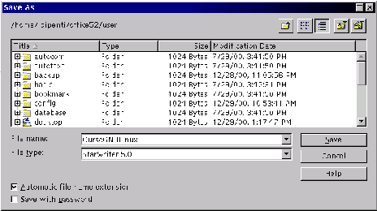

Next: Guardar con contraseña
Up: StarDesktop: El Entorno de
Previous: El cuadro de diálogo
Índice General
Es el turno ahora de este otro cuadro. Su aspecto es el que se ve en
la figura 5.14. Se usa de un modo muy
similar al cuadro de diálogo Abrir. Concretamente, la búsqueda de la
unidad y la carpeta en la que se desea guardar el documento es
exactamente igual. Una vez encontrada la carpeta, se escribe el nombre
que se desea dar al documento en el cuadro de texto Nombre del
archivo; no hace falta añadir extensión, StarOffice pone
automáticamente extensión adecuada si está activa la casilla
Ampliación automática del nombre de archivo.
Figura 5.14:
Cuadro de diálogo Guardar Como
|

|
Subsecciones
Proyecto Cursos - LuCAS - http://lucas.hispalinux.es/htmls/cursos.html